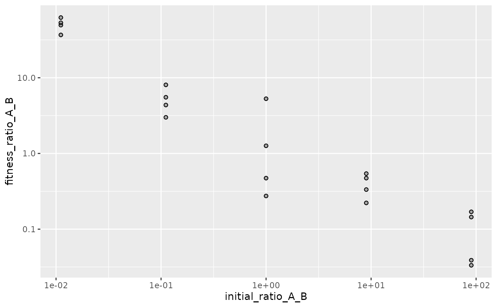
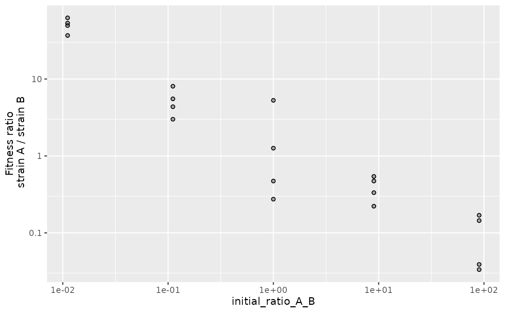
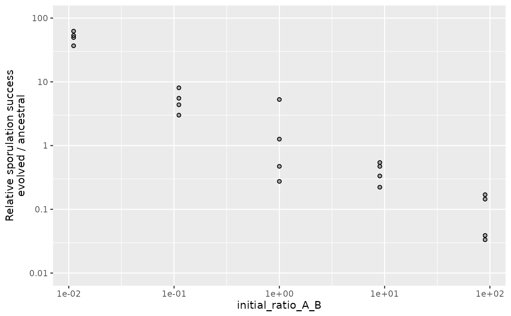

scale_y_fitness_ratio() is a y-axis scale for the relative fitness of
microbes within a group or subpopulation, measured as a ratio of Wrightian
fitnesses. It calls ggplot2::scale_y_log10() with default settings suited
to fitness-ratio data.
Arguments
- name
Character vector (or expression) for axis title. Or
waiver()to automatically name axis usingstrain_names. OrNULLfor no title.- strain_names
Character vector or list used to automatically name axis if
name = NA- limits
Numeric vector of length two giving axis limits. Or
NULLfor automatic limits that include 1 for reference (no change in relative abundance) and span a minimum 10-fold range.- breaks
Numeric vector of positions for axis breaks. Or
NAfor automatic breaks. OrNULLfor no breaks.- labels
One of:
Character vector giving labels for breaks (must be same length as
breaks)NAfor automatic labels that use a simple number format when all breaks are between 0.01 and 100. For wider limits they use \(10^x\) format except for \(1\).Expression vector (must be the same length as
breaks). See ?plotmath for details.NULLfor no labels
- minor_breaks
Numeric vector of positions for axis minor breaks. Or
NAfor automatic breaks. OrNULLfor no breaks.- ...
Other arguments passed to
ggplot2::scale_x_log10()
Details
scale_y_fitness_ratio() expects data that are the ratio of Wrightian
fitnesses for two microbes in the same group or subpopulation, like the
values produced by calculate_mix_fitness().
If the initial abundances of microbes A and B are \(n_A\) and \(n_B\)
(measured as cfu/mL for example) and their final abundances are \(n'_A\)
and \(n'_B\), then their absolute (unscaled) Wrightian fitnesses measured
over that entire time period are
$$w_A = n'_A/n_A \\ w_B = n'_B/n_B$$
The within-group fitness ratio of A to B is \(w_A / w_B\).
Because the abundances of microbes A and B are measured in the same group, the within-group fitness ratio can be equivalently measured from their relative frequencies. If the initial frequencies of A and B are \(q_A\) and \(q_B\) (measured as a proportion or fraction of the total group) and their final frequencies are \(q'_A\) and \(q'_B\), then the within-group fitness ratio of A to B is $$w_A / w_B = \frac{q'_A / q'_B}{q_A / q_B}$$
Examples
library("ggplot2")
fitness_myxo <- calculate_mix_fitness(data_smith_2010, var_names_smith_2010)
fig <- fitness_myxo |>
subset(is.finite(fitness_ratio_A_B)) |>
ggplot(aes(initial_ratio_A_B, fitness_ratio_A_B)) +
geom_point_overlap() +
scale_x_log10()
fig + scale_y_log10()

fig + scale_y_fitness_ratio(strain_names = var_names_smith_2010)

# Axis options
fig + scale_y_fitness_ratio(
name = "Relative sporulation success\nevolved / ancestral",
limits = c(0.01, 100)
)
